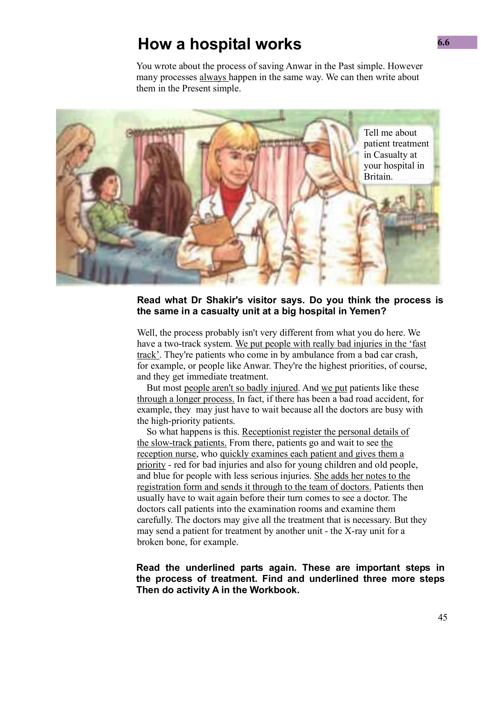

How a hospital works 6.6 You wrote about the process of saving Anwar in the Past simple. However many processes always happen in the same way. We can then write about them in the Present simple. Dialogue bubble: Tell me about patient treatment in Casualty at your hospital in Britain. Read what Dr Shakir's visitor says. Do you think the process is the same in a casualty unit at a big hospital in Yemen?
Well, the process probably isn't very different from what you do here. We have a two-track system. [We put people with really bad injuries in the 'fast track'.] They're patients who come in by ambulance from a bad car crash, for example, or people like Anwar. They're the highest priorities, of course, and they get immediate treatment. But most people aren't so badly injured. And [we put patients like these through a longer process.] In fact, if there has been a bad road accident, for example, they may just have to wait because all the doctors are busy with the high-priority patients. So what happens is this. [Receptionist register the personal details of the slow-track patients.] From there, patients go and wait to see [the reception nurse, who quickly examines each patient and gives them a priority] - red for bad injuries and also for young children and old people, and blue for people with less serious injuries. [She adds her notes to the registration form and sends it through to the team of doctors.] Patients then usually have to wait again before their turn comes to see a doctor. The doctors call patients into the examination rooms and examine them carefully. The doctors may give all the treatment that is necessary. But they may send a patient for treatment by another unit - the X-ray unit for a broken bone, for example. Read the underlined parts again. These are important steps in the process of treatment. Find and underlined three more steps Then do activity A in the Workbook.
[...] للتمييز الواضح مع الإبقاء على صورتها الأصلية في pb_p045.webp.Receptionist register بصيغة المفرد مع فعل الجمع (register بدل Receptionists register)، وطُبع السطر أسفل النص: Find and underlined three more steps (underlined بدل underline، وبدون نقطة ختامية).from 6. 5C، وحُفظت حرفياً.[
{
"num": 1,
"question": "Step 1 (after the registration form goes to doctors):",
"model_answer": "The doctors call patients into the examination rooms and examine them carefully.",
"explain_ar": "فحص الطبيب في غرفة الكشف بعد انتظار المريض لدوره."
},
{
"num": 2,
"question": "Step 2 (doctor's own treatment):",
"model_answer": "The doctors may give all the treatment that is necessary.",
"explain_ar": "تقديم العلاج الكامل إن أمكن داخل الطوارئ."
},
{
"num": 3,
"question": "Step 3 (specialist referral):",
"model_answer": "They may send a patient for treatment by another unit - the X-ray unit for a broken bone, for example.",
"explain_ar": "الإحالة إلى وحدة متخصصة كقسم الأشعة."
}
][
{
"label_ar": "1) الجملة الافتتاحية المقررة وتفصيل المسارين",
"placeholder": "People with really bad injuries are put in the fast track. People who are not so badly injured are put through a longer process."
},
{
"label_ar": "2) التسجيل والفرز التمريضي بالمضارع المبني للمجهول (First, / Then / After that,)",
"placeholder": "First, the personal details of slow-track patients are registered. Then each patient is quickly examined by the reception nurse and is given a red or blue priority. After that, her notes are added to the registration form and it is sent through to the team of doctors."
},
{
"label_ar": "3) فحص الطبيب والعلاج أو الإحالة (Next, / Finally,)",
"placeholder": "Next, patients are called into the examination rooms and are examined carefully. Finally, all necessary treatment may be given by the doctors, or a patient may be sent to another unit such as the X-ray unit."
}
]{
"pb_text_vs_image": "طُوبقت PB ص 45 مع pb-47.png: حُدّدت الأجزاء المسطّرة الخمسة وحُفظت الصيغ الحرفية 'Receptionist register' و'Find and underlined three more steps' بلا نقطة.",
"wb_ocr_vs_image": "طُوبقت WB 6.6 A (ص 75) مع wb-076.png وحُفظت مسافة 'from 6. 5C' وحُلّت فقرة المبني للمجهول."
}